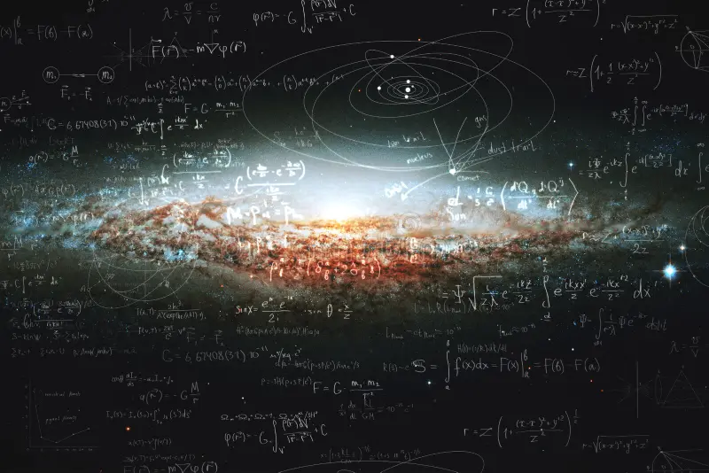
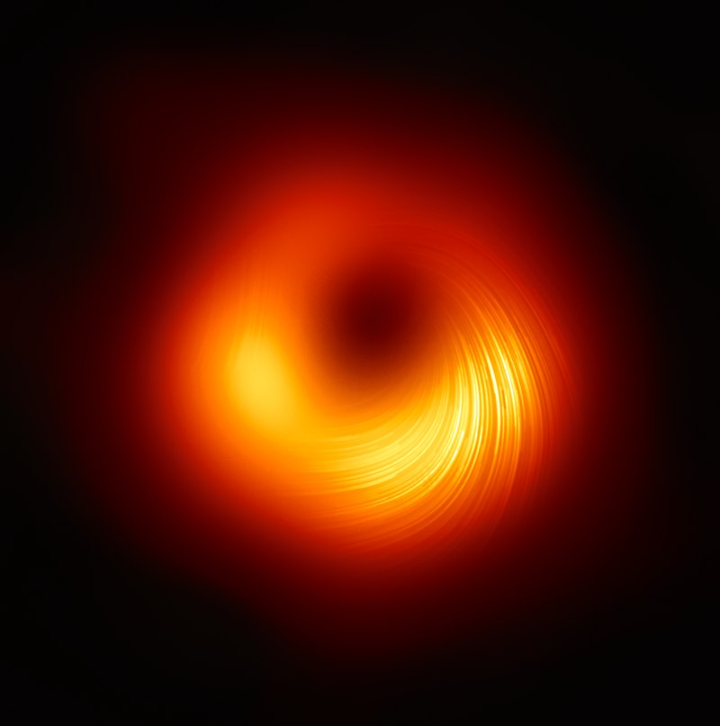
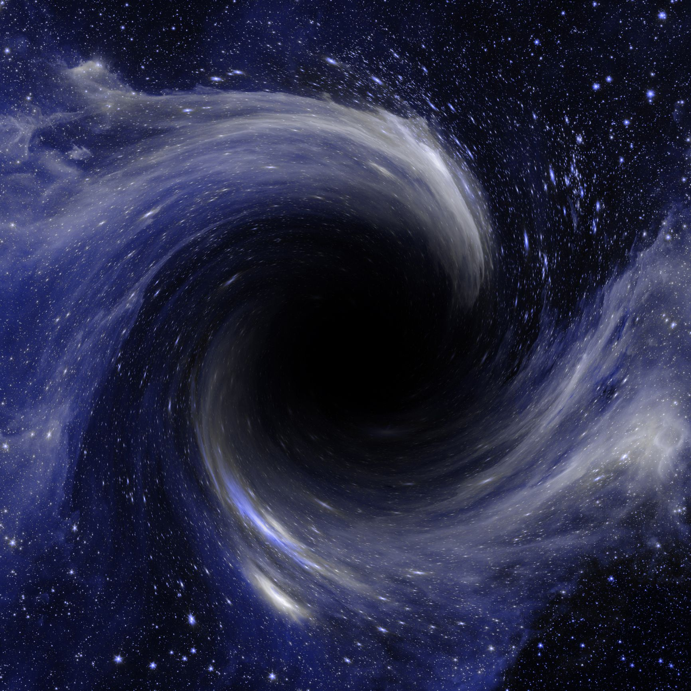

|
| Modern Problems In Astrophysics
At the forefront of cutting-edge research |

|
1. The Black Hole Information ParadoxThe Black Hole Information Paradox arises from a fundamental disagreement between two theories of physics: general relativity and quantum mechanics. Near the extreme gravity of a black hole, both theories break down in their calculations, resulting in a paradoxical situation regarding information loss. Although many solutions have been proposed, astrophysicists have yet to find one that successfully adheres to the known laws of physics and observations, while also being testable.Click to Learn More
|

|
2. Dark Matter
Dark matter is an invisible, hypothetical form of matter that has been found to cause gravitational lensing (when strong gravitational fields cause the distortion of light) and changes the rotational pattern of galexies. There is still no confirmed theory of what dark matter actually is although it pervades roughly 85% of the Universe, as we know it.Click to Learn More |

|
3. The Origins Of The Universe
The Big Bang Theory of cosmic inflation is one of the most successful explanations of the early Universe. But what exactly triggered the Big Bang to occur 14 billion years ago? And what was there before the Big Bang? Will a revolutionary theory of astrophysics be the only way to answer these questions?Click to Learn More |
|